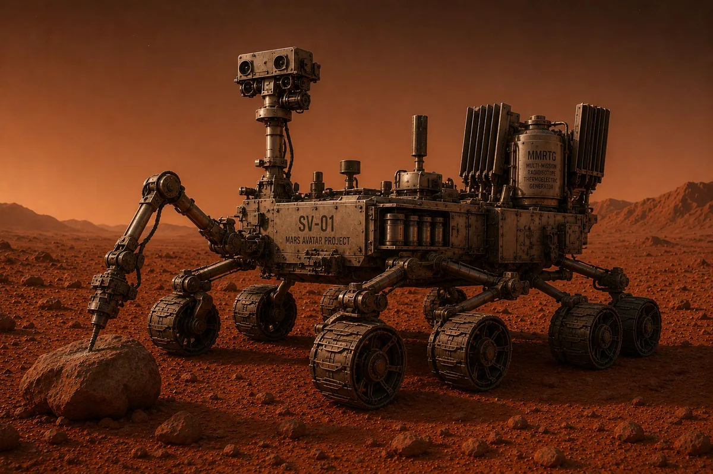
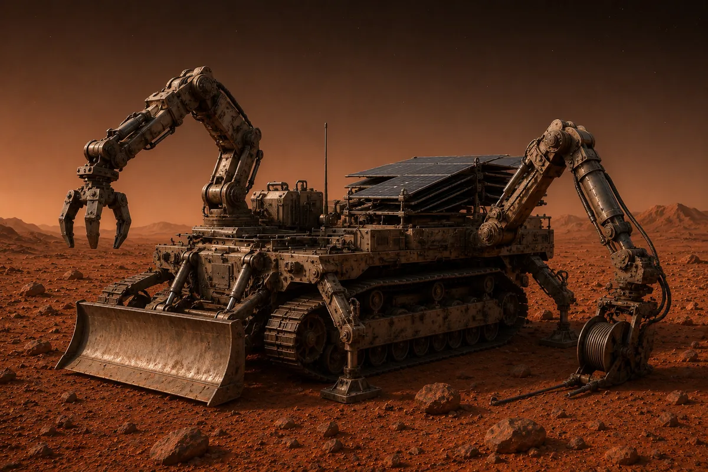
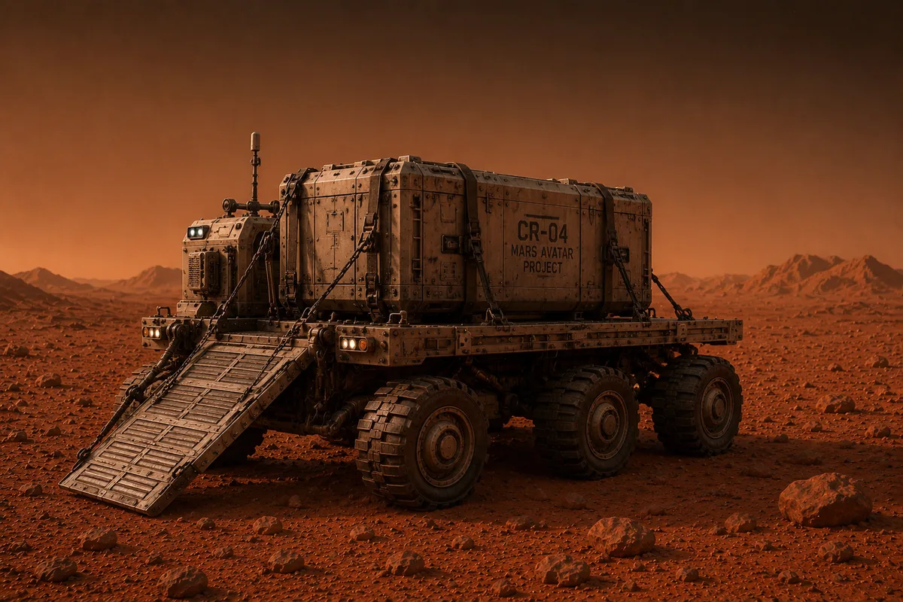
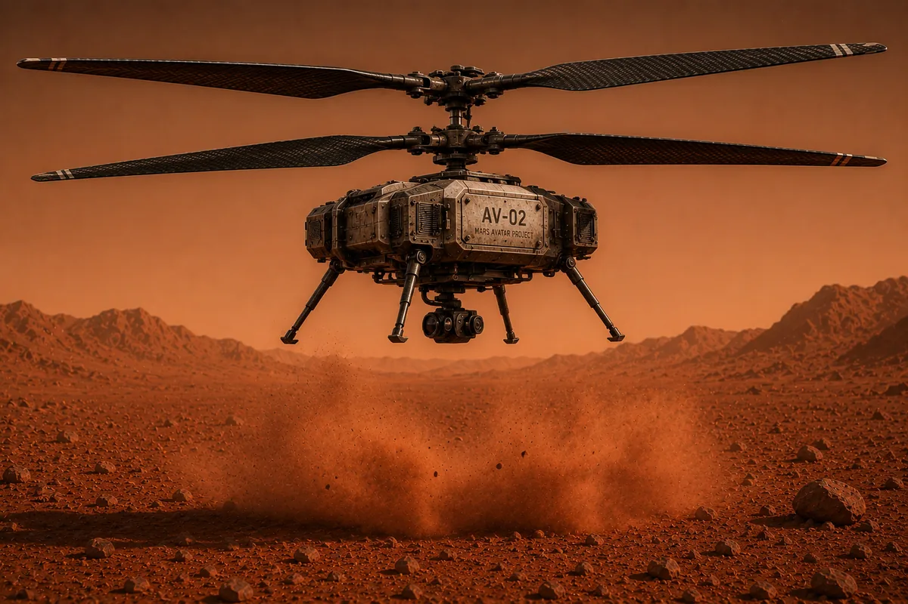
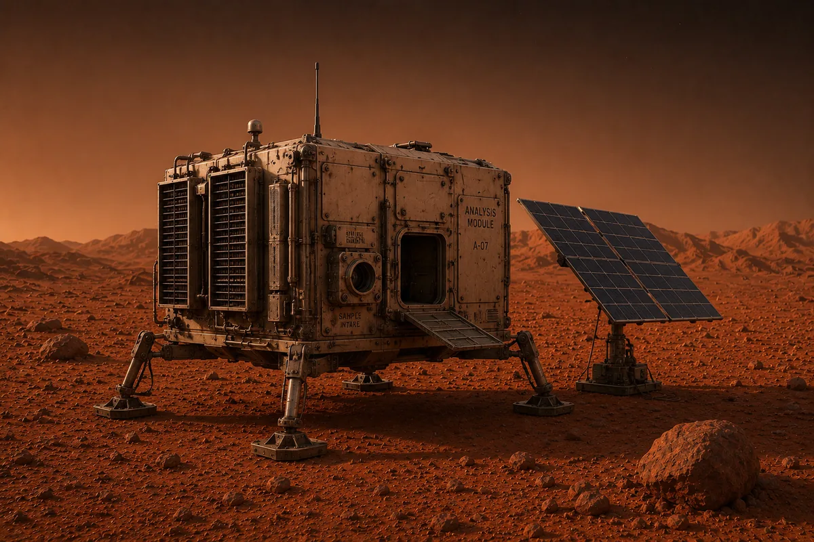
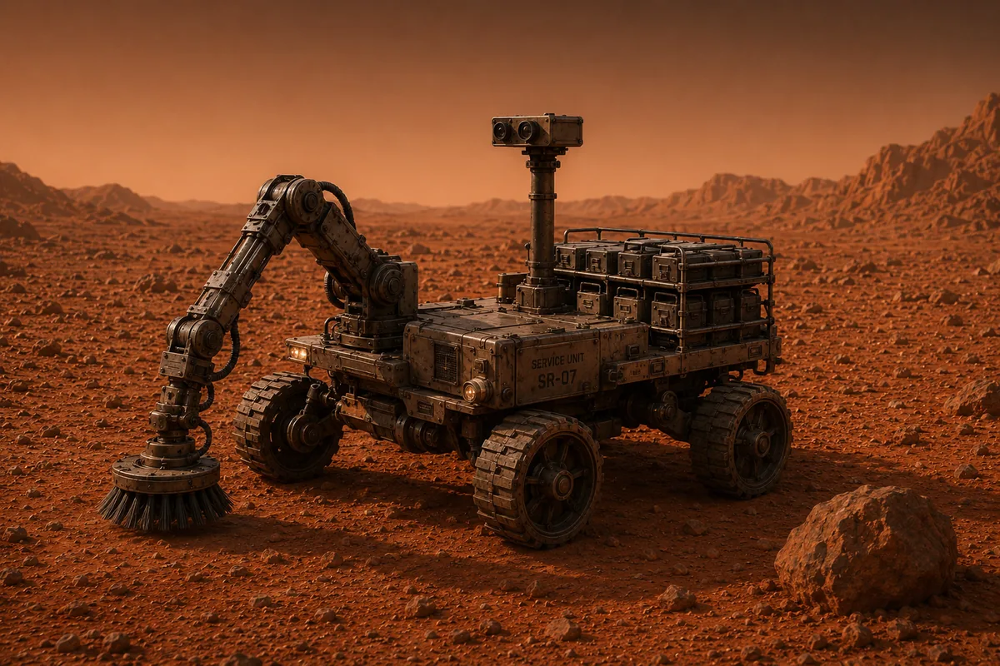
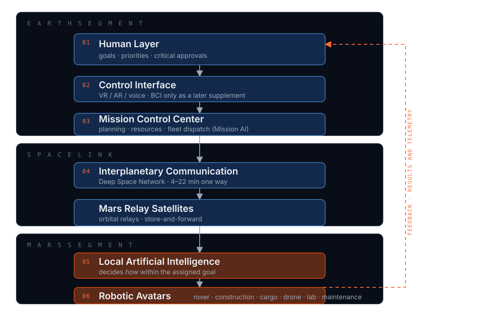

Overview
About the Project
The Problem
You cannot drive a robot on Mars from Earth. A radio signal takes 4 to 22 minutes to get there — and just as long to come back. By the time a rock appears on your screen, the rover met it many minutes ago. Astronauts have remotely driven rovers before, but only when the signal took less than a second. No reaction time, however fast, survives the Mars gap.
Today's Mars rovers can already drive themselves — Perseverance covers most of its route with no human watching. But each rover is a lone, do-everything machine following a route planned days ahead, and every new decision waits for tomorrow's instructions from Earth. Scientists have known the answer for decades: people should set the goals, machines should do the driving. Nobody has yet put the whole system together.
The Solution
The Mars Avatar Project is a blueprint for that system. The real problem is not moving a robot — it is keeping people meaningfully in charge of work they cannot watch live and cannot steer by hand.
Earth sends the what: go there, collect that, stay away from this. A small team of robots on Mars works out the how: they plan their own routes, avoid dangers on their own in seconds, help each other, and report back when the job is done. People keep making every important decision — they just stop turning the steering wheel.
Why It Matters
Before the first humans land on Mars, someone has to prepare the site: build landing pads, set up power, stockpile supplies. That work starts years before any crew arrives — with no one there to watch over it. After people land, an astronaut's hour will be too precious and too risky to spend on routine chores that a supervised robot could handle. And in between lies the science itself: samples, surveys, and equipment that need attention every day, not only when the daily command window allows.
Control without presence is not a convenience — it is the missing layer between today's rovers and tomorrow's settlements. Solve remote work at this distance once, and the same approach opens the far side of the Moon, asteroids, the moons of Jupiter and Saturn — every place people cannot yet stand. The architecture matters more than the destination.
System Design
Architecture
Six layers, grouped into three segments — Earth, the space link, and Mars. Each layer performs its own function and does not duplicate the others. Intelligence stays on Earth; physical presence is transferred to Mars.
Human Layer
Defines scientific tasks, sets priorities, approves critical decisions, analyses results and intervenes in non-standard situations. The AI does not make strategic decisions on its own.
Control Interface
Computer, VR, AR, joysticks and voice in the early stages. Brain–computer interfaces appear only as a possible later supplement, never as a requirement.
Mission Control Center
Task planning, priority management, resource allocation, control of multiple avatars and processing of scientific information — the intelligent dispatcher of the expedition, specified as Mission AI below.
Interplanetary Communication
Transmission of commands and telemetry, state synchronization, integrity verification and encryption over deep-space networks, with relay satellites in Mars orbit for reliability.
Local Artificial Intelligence
Because of the delay, the local AI decides how within the assigned task: it plans a route, avoids obstacles, monitors stability, selects the sampling location, assesses safety, performs the manipulation and reports.
Robotic Avatars
Specialized platforms — scientific rover, construction avatar, drone, laboratory unit, cargo robot, maintenance robot — as the physical extension of human research activity.
Traditional robotics issues low-level instructions: turn right, drive 20 metres, raise the arm. This architecture states the task at the level of a goal — explore this area, collect the most interesting sample, build a solar farm — and the local AI decomposes it into actions itself.
Principal Original Contribution
Mission AI
Nearly every component of this architecture has been demonstrated in isolation — goal-based commanding on NASA rovers, supervisory telepresence from orbit, immersive avatar interfaces. What no program has built is the layer that coordinates a heterogeneous fleet under full interplanetary latency. Chapter 6 of the white paper specifies it as a five-layer reference architecture.
Goal Interpreter
Turns an operator goal into a formal task: measurable result, constraints, success criteria and allowable autonomy level. If the goal is ambiguous it does not guess — it returns clarifying options, cheaper than erroneous execution at tens of minutes of latency.
Fleet Planner
Decomposes the task and distributes subtasks by specialization, position, charge and load. The base mechanism is market-based auction allocation; decentralized consensus protocols such as CBBA guarantee conflict-free assignment even under incomplete fleet connectivity.
Shared World Model
One digital model all platforms write to — geometric (maps, obstacles), semantic (rock types, infrastructure) and dynamic (weather, energy, equipment state). A copy is synchronized to Earth and forms the operator's virtual environment.
Execution Monitor
Compares actual progress against plan, detects deviations and initiates replanning within its authority. It inherits NASA's onboard planner-executives — Remote Agent on Deep Space 1 and the CASPER/ASE pairing on EO-1.
Safety & Approval Gate
The final filter before execution: classifies actions, blocks prohibited ones, queues risky ones for Earth approval, and maintains an immutable log of decisions with a "why" explanation.
The Goal Package
The minimal unit of exchange between Earth and Mission AI, replacing continuous command streams entirely: goal_id, objective, constraints, success_criteria, autonomy_level and fallback. Its formality is what makes behaviour verifiable.
Decision Classes
Class boundaries are not a constant but a parameter of the goal package. As trust statistics accumulate, the operator may move routine actions from Class A to Class B — a controllable trajectory of increasing autonomy rather than a binary choice.
- Class A — critical. First drilling in a new rock type, movement on a steep slope, any action near another platform. Approved by the operator on Earth; latency of hours, one communication cycle.
- Class B — standard. A route in a surveyed zone, sampling by a validated procedure, nominal charging. Decided by Mission AI with a report to Earth; seconds to minutes.
- Class C — internal. Stabilization, thermal regulation, local obstacle avoidance, self-diagnosis. Handled by the platform's onboard AI in milliseconds.
The claim this layer defends is deliberately narrow: a fleet does not solve the unmodelled-failure problem, it lowers the cost of not having solved it. An anomaly that is terminal for a single rover becomes a scheduling event for a fleet — the subtask returns to auction, and a second platform can approach and observe the affected one. Correlated, common-mode failures remain untouched.
Hardware Concept
Robotic Avatars
Rather than one universal robot, the concept proposes a modular ecosystem of specialized platforms that complement one another. Every avatar requires high autonomy, radiation tolerance, a modular design, remote software updates, self-diagnosis, and a safe mode on loss of communication.

Scientific Rover
The primary research platform: geological research, drilling, sample collection, spectral analysis, cartography and ice prospecting. Carries a manipulator, high-resolution cameras, lidar, spectrometers and a drilling module.

Construction Avatar
Installing solar panels, erecting structures, assembling modules, laying cable and preparing sites — one of the key elements in creating a future base.

Cargo Robot
Hauling equipment, delivering spare parts, transporting samples and moving construction materials between work sites.

Drone
Reconnaissance, map building, route finding, equipment inspection and monitoring. Its design must account for flight in a thin atmosphere.

Laboratory Unit
Chemical and biological analysis, sample preparation, long-term storage and transmission of results.

Maintenance Robot
Diagnostics, module replacement, equipment cleaning and routine servicing of the other platforms — the unit on which the fleet's ability to diagnose itself depends.
Images are AI-generated concept art, not photographs of real hardware. A worked example: the drone maps the area, the scientific rover takes samples, the cargo robot delivers the container, the laboratory unit performs analysis, and Mission Control receives the results on Earth. All platforms are conceptual — no flight hardware has been built; see Path Forward.
Technology Roadmap
Path Forward
The complete system is not built in one step. Transitions occur only after the previous stage has been completed successfully against measurable criteria.
Concept Demonstration
Validate the core principles under terrestrial conditions: software architecture, control centre, VR interface, existing robots, a simulated communication delay of 20–30 minutes. The operator sits in a laboratory, the robot works at a remote test range, and the AI plans a route, avoids obstacles, performs the task and returns a report.
Lunar Demonstration
The Moon offers a much shorter distance, more frequent missions and relatively simple logistics. Autonomous navigation, control of multiple robots, infrastructure construction and long-duration operation are tested here.
First Robotic Missions on Mars
Building landing pads, preparing power infrastructure, creating storage depots, geological research and scouting sites for future bases. The operator now manages an entire mission rather than a single robot.
Robotic Infrastructure
Individual platforms unite into one network: power stations, automated warehouses, repair stations, transport hubs, science laboratories and autonomous construction complexes — in effect the planet's first robotic infrastructure.
Support for Crewed Missions
Robots prepare a landing pad, deploy solar power, check equipment, build up resource reserves and prepare habitation modules, so the first crews arrive in a partially prepared environment.
Stage I additionally requires a failure-injection campaign. Anomalies must be introduced by a team independent of the developers and drawn from outside the documented fault model — otherwise the trial measures only that the system handles what it was built to handle.
Documentation
White Paper
The full technical concept — motivation, architecture, and open research questions — is available as a white paper. Current release: Version 3.6, published 27 July 2026 and archived on Zenodo with a permanent DOI.
© 2026 Oleksandr Khalanhot · White paper licensed under CC BY 4.0
Visuals
Gallery
Concept diagrams of the mission architecture.



Get in Touch
Contact
Open to collaboration with researchers, engineers, and institutions interested in autonomous planetary systems.
EMAIL kvadratinho@gmail.com